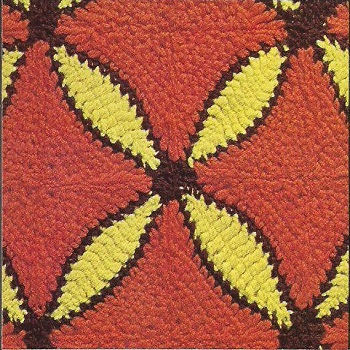

Wedding Ring Afghan - Free Crochet Pattern MATERIALS: COATS & CLARK'S "RED HEART" KNITTING WORSTED, 4 Ply ("Tangle Proof" Pull Out Skeins) : 17 ounces of No. 227 Canary Yellow; 10 ounces of No. 360 Wood Brown and 30 ounces of No. 253 Tangerine. Crochet Hook Size H. Afghan measures 48 x 64 inches. Inner Motifs measure 4 inches square. INNER MOTIF: (Make 140) Starting at center with Yellow, ch 15. 1st rnd: Sl st in 2nd ch from hook, sc in next ch, hdc in next ch, dc in next 8 ch, hdc in next ch, sc in next ch, sl st in last ch; working along opposite side of starting chain, sc in next ch, hdc in next ch, dc in next 8 ch, hdc in next ch, sc in next ch. Join with sl st to first sl st. Break off and fasten. 2nd rnd: Attach Brown to joining, in joining make sc, ch 3 and sc; sc in each of next 12 sts, in next sl st make sc, ch 3 and sc; sc in next 12 sts. Join to first sc. Break off and fasten. Now work in rows as follows: 1st row: Attach Tangerine to the sc following the ch-3, ch 4, tr in next sc, holding back on hook the last loop of each st, dc in next sc, hdc in next sc, yarn over and draw through all loops on hook, sc in next 6 sc, holding back on hook last loop of each st, dc in next sc, hdc in next sc, yarn over and draw through all loops on hook, holding back on hook the last loop of each st, tr in each of next 2 sc, yarn over and draw through all loops on hook. Ch 1, turn. 2nd row: Sc in next 10 sts. Ch 1, turn. 3rd row: Draw up a loop in each of first 2 sts, yarn over and draw through all loops on hook-1 sc decreased; sc in each st across to within last 2 sc, dec 1 sc over next 2 sts. Ch 1, turn. Repeat 3rd row until 2 sts remain. Ch 1, turn. Next row: Dec 1 sc over last 2 sc. Break off and fasten. Working along opposite side of center oval, complete other side of motif, starting with first row. OUTER MOTIF (Make 48): Work as for Inner Motif, until one Tangerine section has been completed. Block motifs to measurements. Arrange 4 Inner Motifs with 4 Brown corners meeting and sew adjacent side edges neatly together to form a large motif. Make 5 rows of 7 large motifs, sewing edges as before. Sew Outer Motifs, having 10 motifs along each narrow end and 14 motifs along each long end, with 2 Brown corners meeting 2 joined Brown corners along all 4 sides.  HOME |